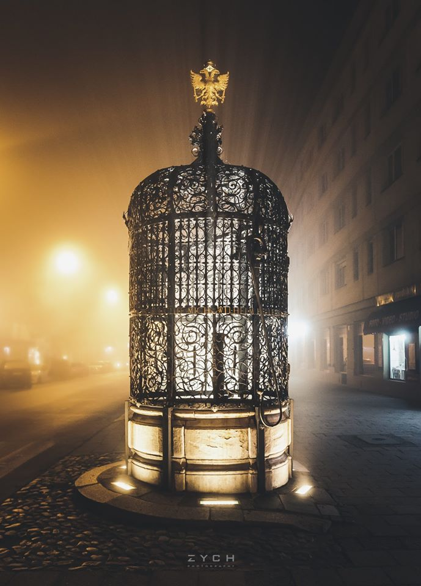

Piękna Studnia
 Jedna z najdawniejszych studni miejskich, nazywana tak ze względu na bogatą dekorację. Stoi w pobliżu rynku, na początku ulicy Wrocławskiej. Jest obiektem unikatowym w skali kraju, uznawanym za arcydzieło barokowej sztuki kowalskiej. Stanowi zarazem jeden z najcenniejszych i najpiękniejszych zabytków Nysy. Głębokość studni wynosi 7 m, sięga ona 2 metry w głąb poziomu wodonośnego. Dekorację kraty stanowią liczne motywy roślinne, zwierzęce i fantazyjne, których źródłem jest woda, głównie wizerunki postaci i stworów morskich. Piękna Studnia silnie kontrastuje z monotonną architekturą. Obecnie jest nocą podświetlona, przez całą dobę można więc podziwiać jej bogatą ornamentykę. Turyści odwiedzający Nysę wrzucają do jej wnętrza symboliczny grosik, przyrzekając, że kiedyś tu jeszcze przyjadą.